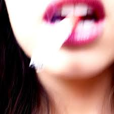
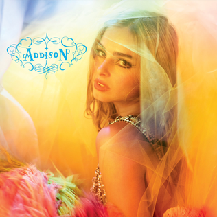

aquamarine
Es su segundo sencillo en su carrera, con una vibra muy electropop pero tranquila y con un video musical muy bueno.

High Fashion
Es una canción dentro de su primer EP llamado "Addison" siendo esta, para mi, la mejor canción del EP.

Headphones On
Está dentro de su EP siendo la ultima canción dentro de este, siendo aun más electropop que el resto y más pegadiza.